DeepSeek Harness 桌面版
安装与使用教程
按顺序做一遍就行，每一步都写清楚了该点哪里。
0先搞清楚四件事
- 机床 = Agent，就是你要装的这个客户端。它提供工具并真正动手：读文件、写文件、跑命令、装环境。它自己不聪明，离开师傅就是一堆铁。
- 师傅 = 模型，DeepSeek 的大模型。它负责动脑子：听懂你的话、决定下一步干什么、把代码写出来。它在云端跑，不在你这台电脑里。
- 工资 = Token。模型每读一个字、每写一个字都算 Token，按量计费。工资（账户余额）决定你能请谁（用哪个模型）、能干多少活（能聊多少轮）。
想多认几个名字？（不看也不影响往下做）
叫 Agent 的（机床）：DeepSeek Harness、Pi、Claude Code、Cursor、GitHub Copilot、Codex CLI、Windsurf、Cline、Roo Code、OpenHands；国内的还有通义灵码、Trae、CodeBuddy、Qoder……
叫模型的（师傅）：DeepSeek、GPT、Claude、Gemini、Grok；国内的 Qwen（通义千问）、Kimi、GLM（智谱）、豆包……
型号名字几个月换一批，记住这些“家族名”就够了。真想知道谁强，别信排行榜，拿你自己的活让它们各干一遍最准。
还有一点容易混：上面那些 Agent 里，很多是编辑器 / IDE 插件（Cursor、Copilot 这类），DeepSeek Harness 是单独的桌面程序——不写代码也能用。
1安装前的准备
- 确认系统是 64 位 Windows 10 或更高：按
Win + Pause，看"系统类型"那行写着"64 位操作系统"就对了。 - 确认版本和芯片：点屏幕左上角的 苹果菜单 → 关于本机，看「芯片」那一行——写 Apple M… 就是 Apple 芯片（arm64），写 Intel Core… 就是 Intel 芯片（x64）；顺便确认 macOS 是 12 或更高。
- 腾出大约 2 GB 硬盘空间。
- 电脑连着网。
- 手机放手边——注册要收短信验证码，或者用微信扫码。
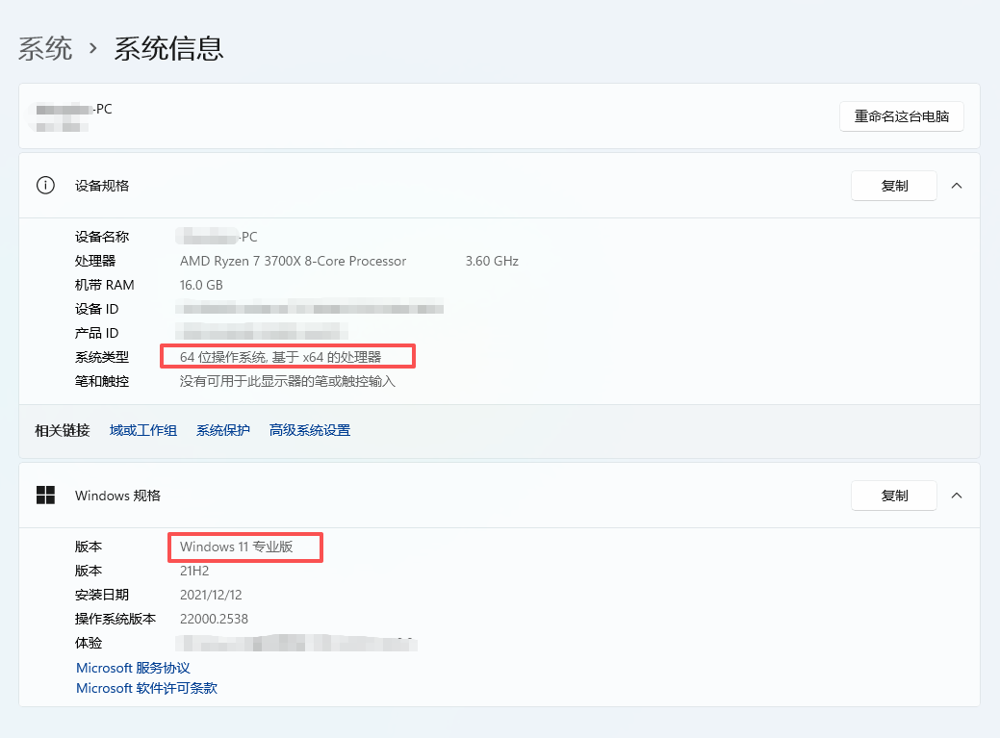
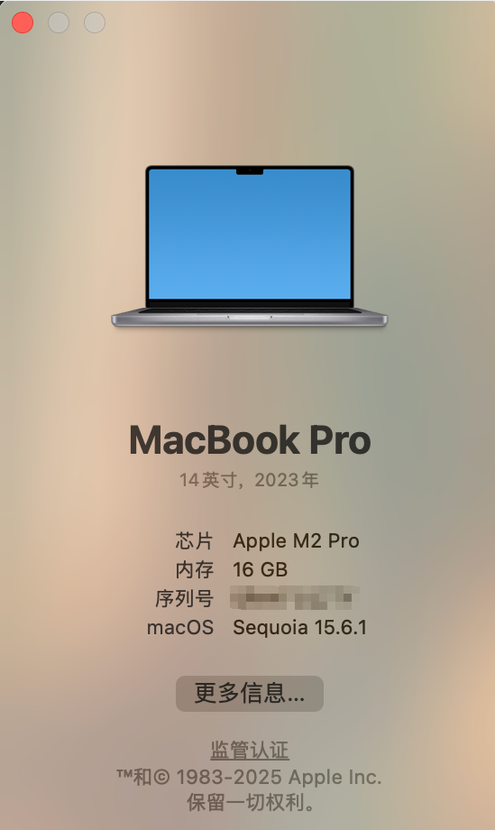
2下载
- 打开浏览器（Edge 或 Chrome 都行），地址栏输入
www.deepseek.com/download/回车。 - 往下找 DeepSeek Harness 那一块，点 下载适用于 Windows 版本（按钮上会写 Windows / x64）。
- 浏览器开始下载一个
.exe文件，名字类似deepseek-harness-0.2.1-rc.3-win-x64.exe，大约 300 MB。 - 下载完按
Ctrl + J能看到它，点旁边的"在文件夹中显示"。
- 打开浏览器（Safari、Chrome、Edge 都行），地址栏输入
www.deepseek.com/download/回车。 - 往下找 DeepSeek Harness 那一块，点 下载适用于 macOS 版本（按钮上会写 macOS / Apple 芯片）。
- 官网如果给了两个 Mac 包，按第 1 步查到的芯片选：Apple 芯片选 arm64 / Apple Silicon，Intel 选 x64 / Intel。选错了打开时会提示不支持这台 Mac。
- 浏览器开始下载一个
.dmg文件，名字类似deepseek-harness-0.2.1-rc.3-mac-arm64.dmg，大约 300 MB。 - 找文件：Safari 点右上角下载按钮（↓ 箭头），Chrome 按
⌘ + ⇧ + J；文件都在「下载」文件夹里。只想看看文件本身：在访达里按⌥ + ⌘ + L直接打开「下载」。
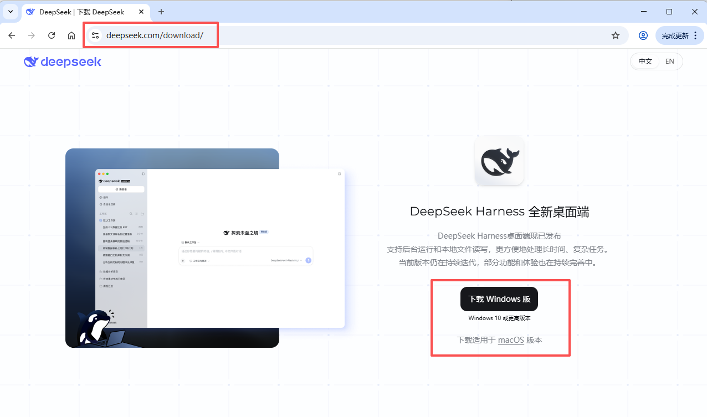
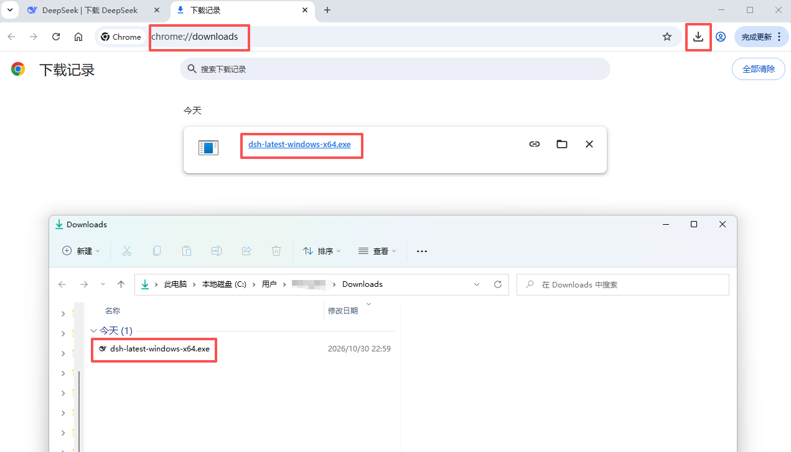
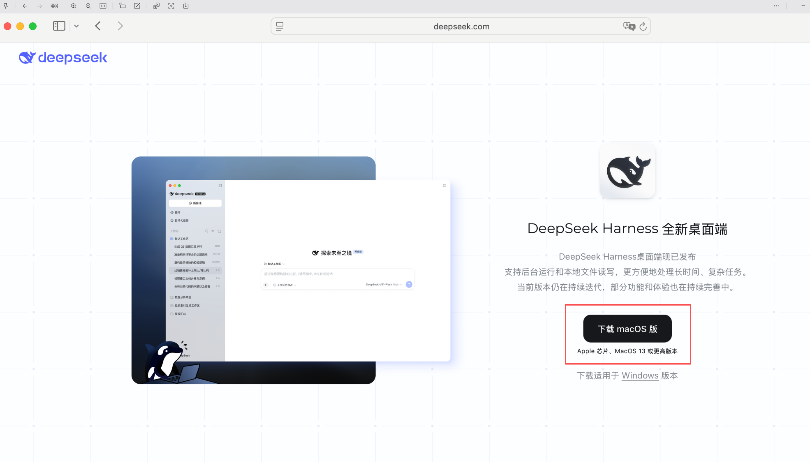
3安装
- 双击下载好的 exe 文件。
- 可能会弹一个蓝色窗口 “Windows 已保护你的电脑”：那就点小字 更多信息 → 再点 仍要运行。（官网下的可以放心点。）没弹这个窗口也是正常的——说明系统没拦，直接看下一步，不用找。
- 安装程序打开后：问"为谁安装"就选 仅为我安装；安装路径保持默认别改；点 安装 / Install。
- 进度条走完 → 点 完成 / 运行 DeepSeek Harness。
- 桌面上会出现图标，右下角托盘（时间旁边的小箭头里）也会有它的图标。
- 双击下载好的
.dmg文件，会弹出一个窗口，里面是 DeepSeek Harness 图标和「应用程序」文件夹的快捷方式。 - 把 DeepSeek Harness 图标拖进「应用程序」文件夹，等几秒复制完。然后把左边 dmg 名字后面的 ⏏ 点一下（弹出），免得它一直挂在桌面上。
- 打开「访达 → 应用程序」，双击 DeepSeek Harness 启动。第一次启动慢一点是正常的。
- 第一次启动很可能被系统拦住：弹窗说“无法打开，因为 Apple 无法验证”。点 好 / 完成 → 打开 系统设置 → 隐私与安全性 → 往下滚，找到“…已被阻止使用”那一行 → 点 仍要打开 → 输入电脑密码或按 Touch ID。只有第一次要这么做。（也可以在「应用程序」里按住
Control点图标 → 选「打开」。） - 如果它问能不能访问「桌面 / 文稿 / 下载」文件夹，按需点允许就行；它真正干活的范围还是第 6 步你指定的工作区文件夹。
- 启动成功后，屏幕右上角菜单栏会出现它的图标，Dock 里也会有一个。想以后好找：右键 Dock 图标 → 选项 → 在 Dock 中保留。
⌘ + 空格 搜“终端”回车），粘贴运行 xattr -dr com.apple.quarantine "/Applications/DeepSeek Harness.app" 回车，再双击打开。（会要求输开机密码，输入时屏幕不显示字符是正常的。）
① 按
⌘Q 退出程序；桌面上还挂着 dmg 的话，在访达侧边栏点它后面的 ⏏ 弹出。② 访达按
⇧⌘A 打开「应用程序」，确认里面有 DeepSeek Harness；如果它只躺在「下载」里，拖进去（问是否替换就选替换）。③ 只从「应用程序」里双击启动，别再点 dmg 窗口里那个图标。
④ 已经在「应用程序」里还报同样的错：退出应用，终端运行
xattr -dr com.apple.quarantine "/Applications/DeepSeek Harness.app"，再启动一次；还不行重启一次 Mac。⑤ 检查是不是存了好几份：终端运行
mdfind -name "DeepSeek Harness.app"，只保留 /Applications 里那份，其它拖到废纸篓。
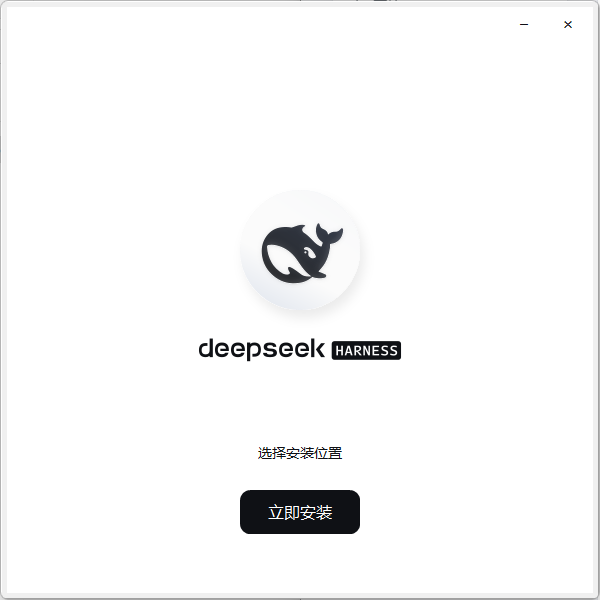
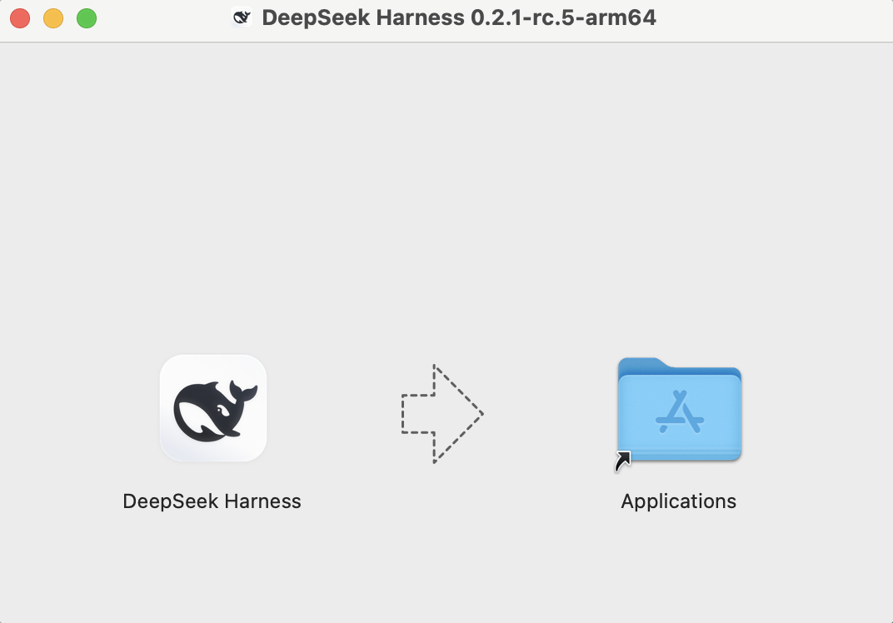
4注册账户
第一次打开会出现一个欢迎页，上面两个入口：登录 和 添加 API Key。
4.1 主路径：手机号注册并登录（推荐）
- 欢迎页点 登录。
- 电脑会自动打开浏览器，进入 DeepSeek 开放平台的授权页面。
- 没注册过就点 注册：
- 输入手机号 → 点 获取验证码；
- 手机收到 4~6 位数字短信，填进去；
- 设置密码（8 位以上，字母 + 数字）；
- 勾选同意用户协议 → 点 注册 / 登录。
- 也可以选页面上的 微信扫码，更省事。
- 登录成功后浏览器会显示"授权成功 / 可以返回应用"，并可能自动跳回客户端。
- 没自动跳回来：回到浏览器那个完成页点 打开客户端；或者直接切回 DeepSeek Harness 窗口。
- 回到客户端后，会先走一遍设置引导（见 4.4），走完就进主界面了。设置 → 账号与余额 里能看到余额。
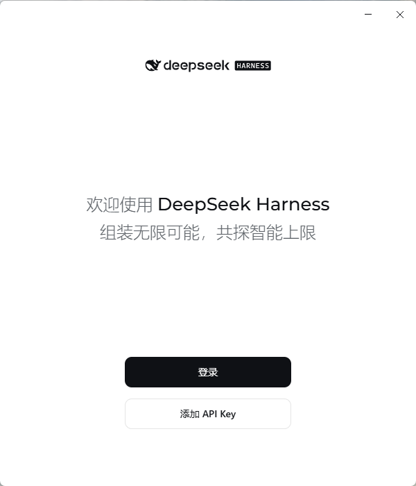
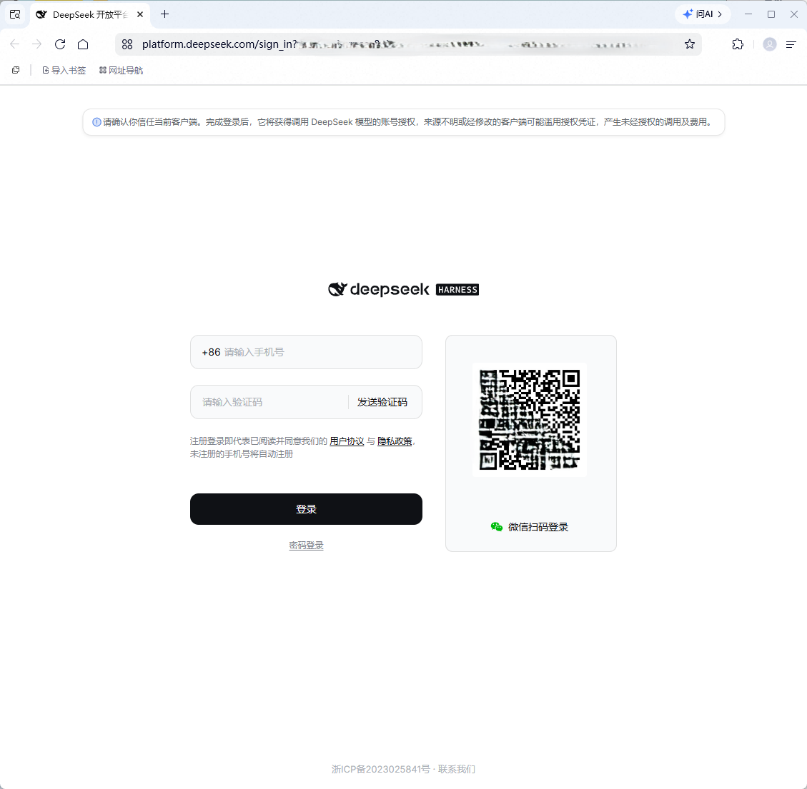
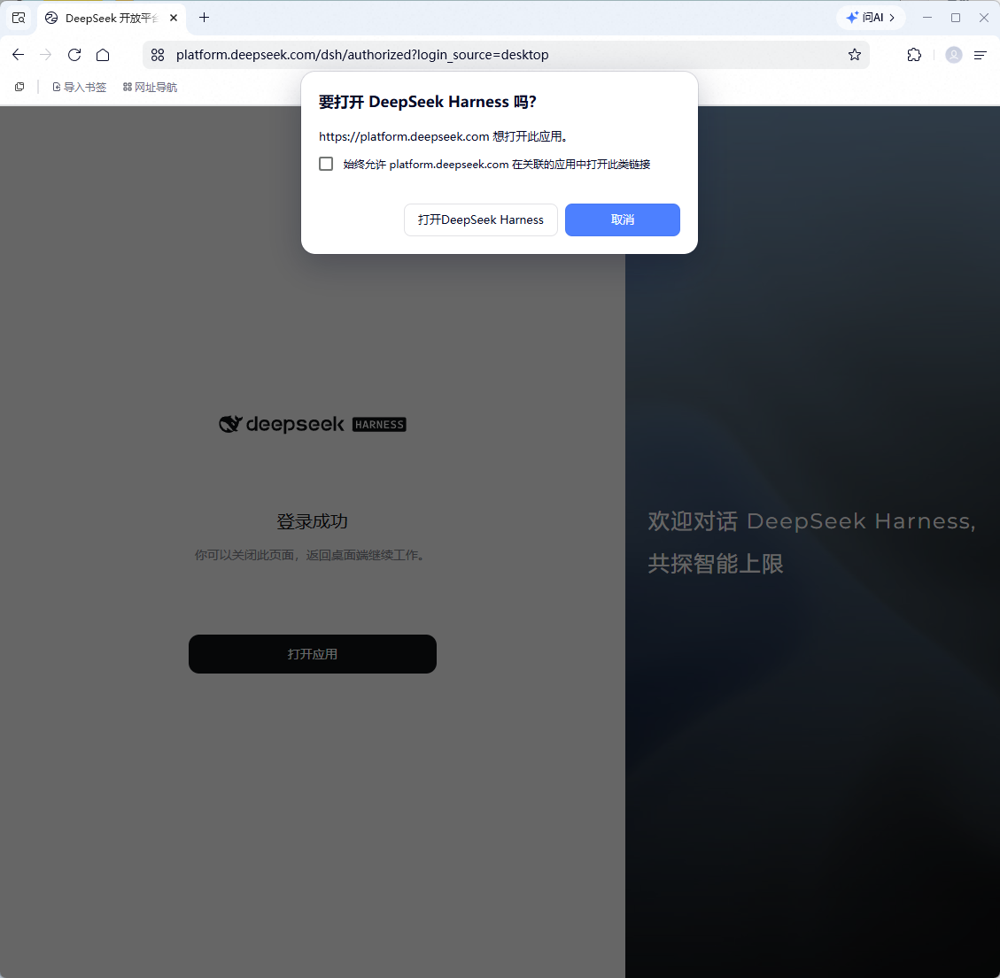
4.2 附注：想用 API Key 的看这里
适用情况：你已经在用 DeepSeek API，或者手上有别人给的密钥。
- 浏览器打开
platform.deepseek.com，用手机号登录。 - 左侧菜单点 API Keys → 创建 API Key → 起个名（比如
my-pc）→ 创建。 - 页面显示一串以
sk-开头的字符。它只显示这一次，点"复制"立刻存到记事本里。 - 回到客户端欢迎页点 添加 API Key，粘贴进去 → 保存并继续。
4.3 暂时不想登录
欢迎页上有 稍后配置，可以先看看界面。但只要有任务要调用模型，就必须先配好账号或密钥，否则会报错。
4.4 第一次进客户端：跟着设置引导走一遍
授权成功、第一次进客户端时，会自动出现一个设置引导，一共五屏，一屏点一次 下一步 / 继续，走完就进主界面了。
- 前面几屏是说明和基本设置，看着点「下一步」就行。
- 如果某一屏让你选工作区文件夹，先选个空文件夹——比如在桌面上新建一个
AI 工作区。别一上来就选整个 C 盘或“文档”别一上来就选整个个人文件夹或“文稿”（第 6 节细讲）。 - 有一屏上就有 充值 按钮（截图 09）。新账号余额是 0，直接在这儿点进去充，比单独去网页少走一步，详细步骤见第 5 节。
- 有一屏需要你做一个选择（截图 10），按自己的需要选，选完点「下一步」。
- 看到主界面（引导第 5 屏，截图 11）就说明配置完了，可以开始用。
引导只弹这一次，以后想改设置就去 设置 里改，选错了不用重来。
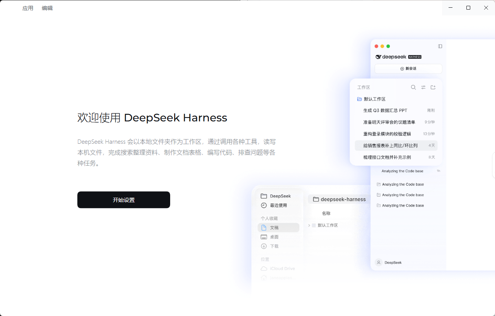
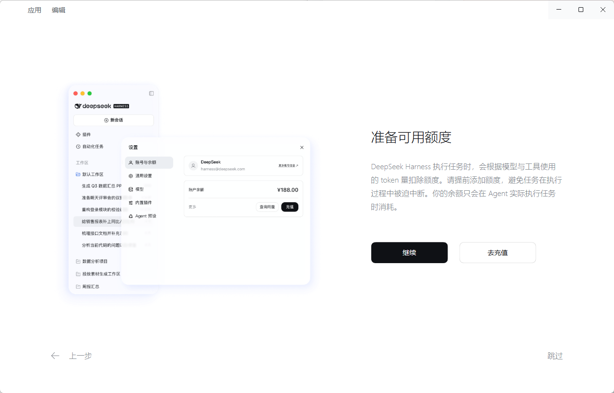
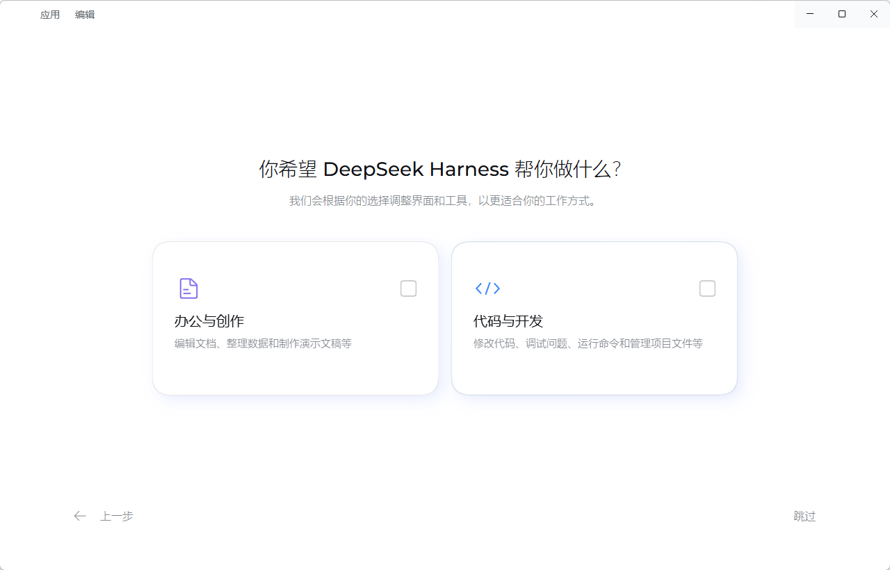
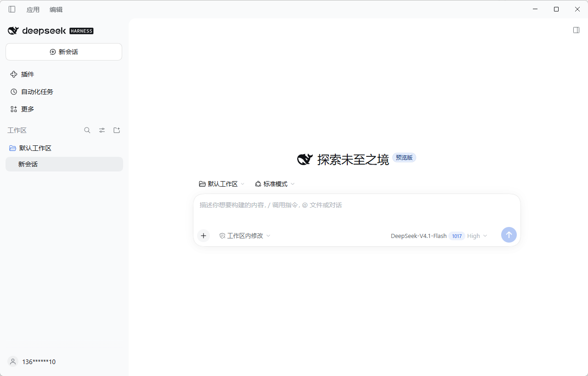
5充值（关键一步）
登录后余额通常是 0，或者只有一点赠金——这时候还干不了活，得自己充钱。两条路效果一样：在客户端里点（5.1，推荐），或者去网页充值（5.2）。钱充进的是同一个账户，用哪个都行。
5.1 在客户端里充值（推荐）
- 打开 DeepSeek Harness，点窗口左下角自己账号那一行（显示手机号，比如
136******10）。 - 弹出设置窗口，左侧菜单点 账号与余额。
- 右侧上方是账号卡片：已登录 DeepSeek + 手机号；右边有 更多账号信息 ↗，想看网页端的账户详情就从这儿跳。
- 下面一张卡片写着 充值余额 和当前金额（新账号是
¥0.00）。点右下的 充值 按钮（截图 12 红框）。 - 浏览器会打开开放平台的收银台，从下面 5.2 的第 3 步接着做（选金额 → 扫码付款）。
- 付完切回客户端，设置 → 账号与余额 里的 充值余额 数字变了就成功了；没变就退出客户端重新打开。
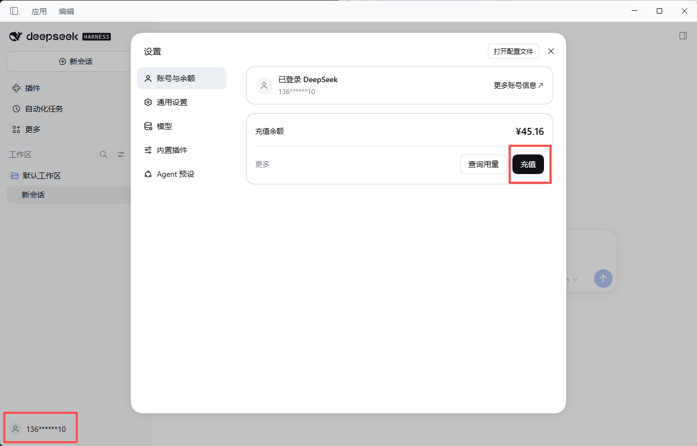
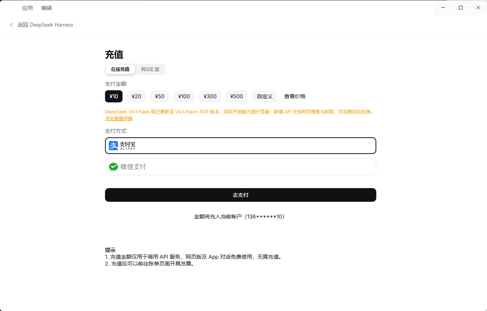
5.2 在网页里充值
- 浏览器打开
platform.deepseek.com，确认已登录（就是第 4 步注册的那个账号）。 - 左侧菜单点 充值（有的界面叫"充值中心""账户余额"）。
- 选金额。第一次充 10 元就够试很久；只想试试手，充 1 元也行。
- 支付方式选 支付宝 或 微信支付。
- 弹出二维码 → 用手机上的支付宝/微信 扫一扫 → 确认付款。
- 付完回网页看余额，没变就按
F5按⌘R刷新。 - 回到 DeepSeek Harness，设置 → 账号与余额 里的 充值余额 数字变了就成功；还是旧的就退出客户端重新打开。
关于花费
- 分 空闲时段 和 高峰时段 两档价，高峰单价是空闲的 2 倍。具体数字见下面的价格表。
- 用多少扣多少，不用不扣；余额快没了会提示。
- 怕花超：小额充、用完再充，最稳。
看花了多少钱：用量信息页
客户端「设置 → 账号与余额」→ 查询用量，会打开开放平台的 platform.deepseek.com/usage 用量信息 页：
- 最上面两块数字：充值余额（旁边有「去充值」）和 累计消费金额；余额预警可以点「去设置」开。
- 下面按 时间维度（今天 / 本月 …）和 API Key 筛选，看 消费金额、API 请求次数、Tokens 三个汇总，以及下面的柱状图；右上角可以 导出。
- 按模型分组的图能看出是 flash 还是 v4-pro 花得多。
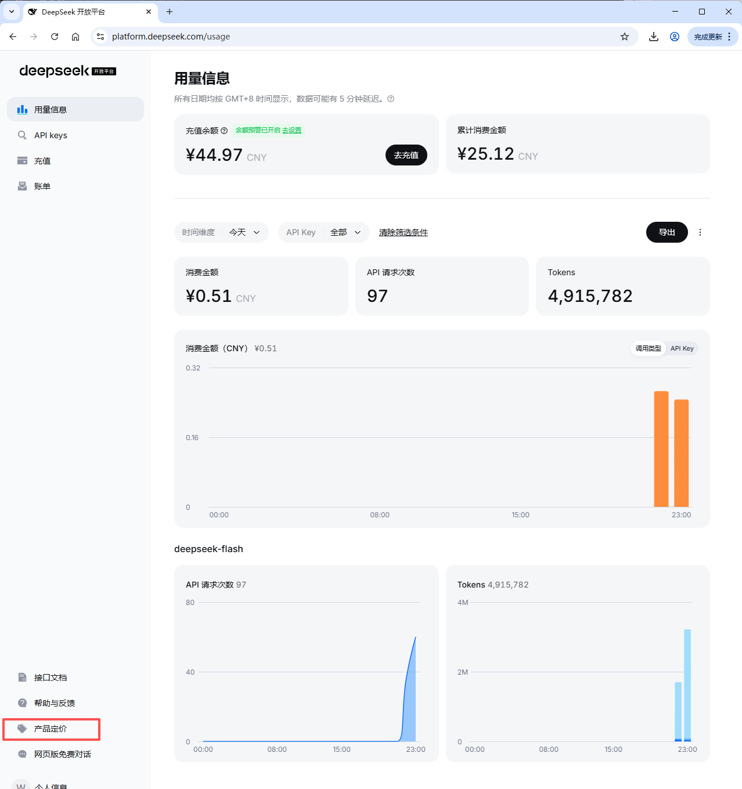
看单价：模型 & 价格
用量信息页左下角点 产品定价，会打开 API 文档的「模型 & 价格」页。表里按“百万 tokens”为单位列单价，每个模型下面分 空闲时段 / 高峰时段 两行（截图 15 红框）。以“百万 tokens 输入（缓存命中）”为例：
| 模型 | 空闲时段 | 高峰时段 |
|---|---|---|
| deepseek-flash | 0.02 元 | 0.04 元 |
| deepseek-v4-pro | 0.15 元 | 0.30 元 |
同一个表里还列了各模型的版本、上下文长度、功能和输出单价。数字会随版本调整，以页面上的为准。
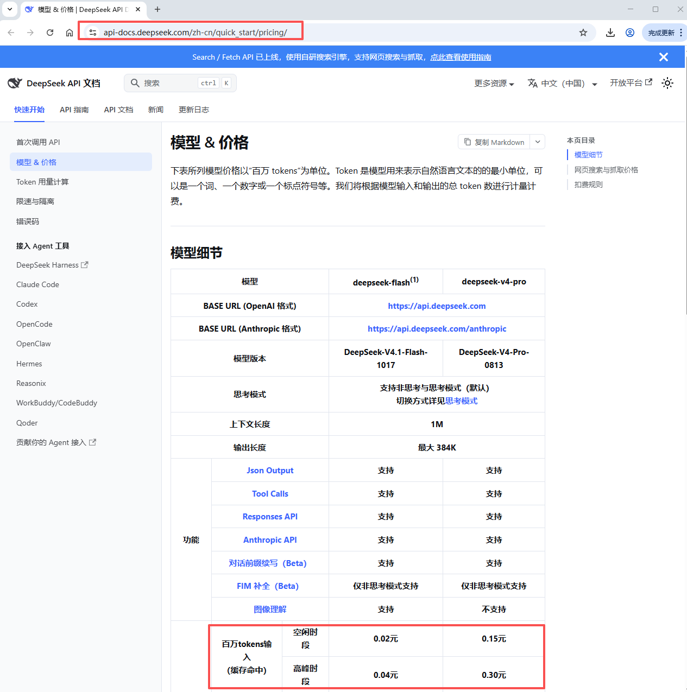
F5按 ⌘R刷新 / 重新打开设置窗口；② 确认充的是开放平台账号（和客户端里显示的手机号一致），不是聊天 App 的账号；③ 支付宝 / 微信显示付款成功但页面没更新，等一两分钟再看，不要重复付款。
6第一次使用
- 先给它指定一个工作区（允许它读写的文件夹）。点 选择文件夹 / 添加工作区，比如在桌面新建一个
AI 工作区选它。
不要一上来就把整个 C 盘或“文档”交给它，先用空文件夹熟悉。 - 先给它指定一个工作区（允许它读写的文件夹）。Mac 上没有 C 盘 D 盘，路径长这样：
/Users/你的用户名/Desktop/…。- ① 点 Dock 最左边那个笑脸（访达）→ 左侧点 桌面；
- ② 按
⇧⌘N新建文件夹，名字填AI 工作区（也可右键 → 新建文件夹；改名选中后按Return）； - ③ 回客户端，点输入框上方那个 默认工作区 → ＋ 添加工作区…，在弹窗里点「桌面」→ 选中
AI 工作区→ 打开； - ④ 左侧栏出现
AI 工作区、输入框上方也变成它，就成了——以后它动手只在这个文件夹里。
- 选模型（可选）：输入框右下角有个模型名（默认
DeepSeek-V4.1-Flash），点它就能换模型；右边的High之类是思考强度 / 确认档位——档位越高，它想得越久、动手前越会问你。不确定就保持默认，默认档跑通这个教程完全够用。 - 在输入框发一句话（截图 18Mac 截图 4），比如："帮我在当前文件夹里新建一个 hello.txt，写一句你好。"
- 它会直接开始干活。如果弹出权限确认（新建文件、运行命令时可能会问），看清它要做什么再点 允许；没弹窗也是正常的——不是没生效，说明这一步不需要额外确认。
- 做完去文件夹看，
hello.txt是不是真出现了。没看到就按F5刷新一下文件夹。没看到就在访达里退到上一级再点回来（访达一般会自己刷新）。
没弹窗：也正常，它只在你给它的工作区文件夹里动手，不会跑到别处去。
~ 就是 /Users/你的用户名，即访达侧边栏里的「小房子」；教程里的 ~/.dsh = 个人文件夹里的隐藏文件夹 .dsh。· 访达左侧那几项就是固定文件夹：桌面 / 文稿 / 下载，对应
/Users/你/Desktop、/Users/你/Documents、/Users/你/Downloads。· 常用快捷键：
⇧⌘N 新建文件夹、⌘↑ 上一级、⇧⌘. 显示隐藏文件、⌥⌘P 显示路径栏（一眼看到自己在哪）、选中文件按 ⌥⌘C 复制完整路径。· 外接硬盘 / U 盘在
/Volumes/…，一般别当工作区（拔掉就没了）。· 第一次选「桌面」时系统会问“是否允许访问桌面文件夹”，点允许，不然它读不到你给的文件。
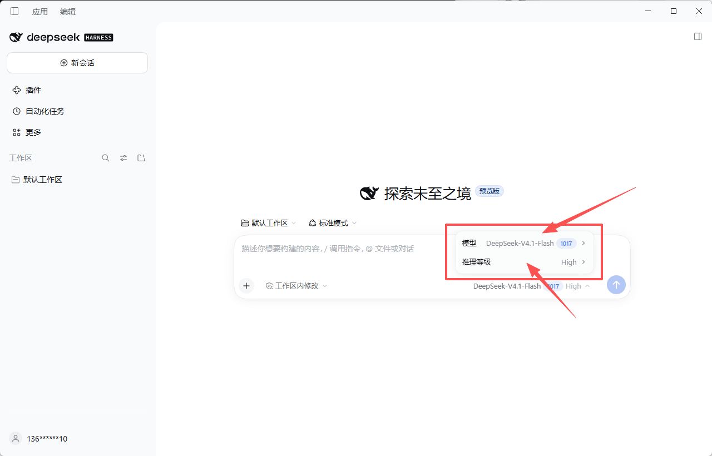
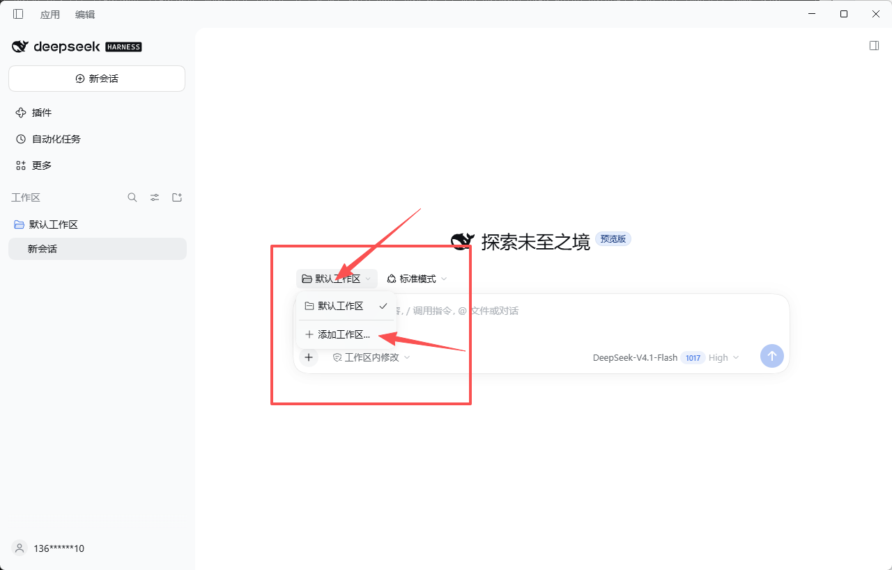
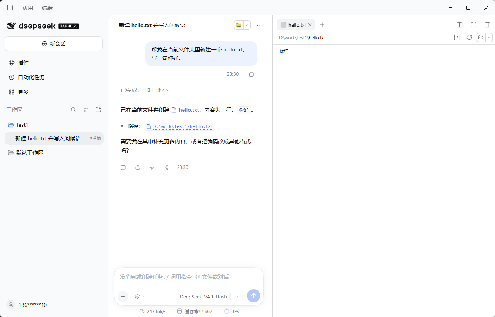
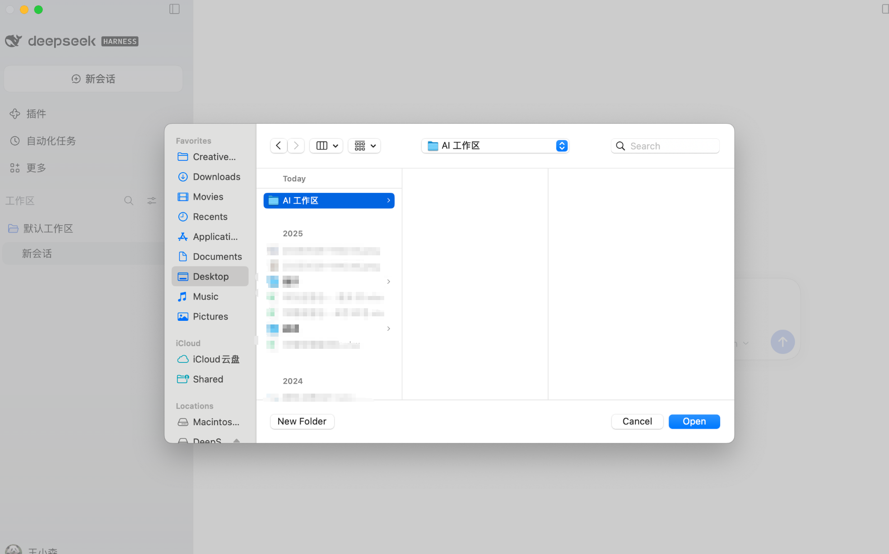
/Users/… 开头7日常使用要注意的
- 点"×"不等于退出。 关窗口只是藏到右下角托盘，任务还在后台跑。找回窗口：点一下托盘里它的图标。
- 点左上角红灯（或按
⌘W）不等于退出。 窗口关掉了，程序还在右上角菜单栏里，任务也还在后台跑。找回窗口：点菜单栏里的图标，或者点 Dock 里的图标。 - 真正退出：右键托盘图标 → 退出。有任务在跑会再问你一次。
- 真正退出：点右上角菜单栏图标 → 退出，或者窗口在前台时按
⌘Q。有任务在跑会再问你一次。Dock 里图标下面那个小点没了，才算真退了。 - 自动更新：它自己下载新版本，下次启动装好。预览版更新较频繁，属正常。
- 数据都在本机：会话、设置存在
%USERPROFILE%\.dsh（客户端菜单里如果有「打开数据目录」之类的入口，点一下就能直接跳过去），别随手删。 - 数据都在本机：会话、设置存在
~/.dsh（~就是你的个人文件夹；访达里按⇧⌘G输入~/.dsh能直接跳过去），别随手删。 - 别把密钥、密码、身份证照片发给它，也别让它动你不了解的文件夹。
- 中文输入法打不出字：点一下输入框再试；不行就重启客户端。如果只是候选框跑到屏幕角落，把客户端窗口拖一下再点回输入框通常就好了。
7.1 可选：把 dsh 命令装进终端
（不装完全不影响——只要你不打算在终端 / 脚本里调用它，这一节可以跳过。）
桌面版可以往系统里装一个 dsh 命令。装好之后在命令行「终端」里敲 dsh，用的还是同一个 agent：同一份登录状态、同一份数据（%USERPROFILE%\.dsh~/.dsh），只是把界面换成了命令行。官方文档里 dsh xxx 那些用法，前提就是先把这个命令装好。
- 打开客户端，找到它的菜单（右下角托盘图标右键，或界面里的菜单入口）让窗口在前台，看屏幕最上面那条菜单栏（Mac 的程序菜单永远在屏幕顶部，不在窗口里），点 DeepSeek Harness。
- 点 安装 dsh 命令…（有的版本是 管理 dsh 命令… → 里面选 安装）。
- 如果弹窗问要不要加进 PATH / 是否允许修改，点 是 / 允许，点 是 / 允许；装到
/usr/local/bin这种系统目录时会问开机密码，输入时屏幕不显示字符是正常的。 - 新开一个「命令提示符」或 PowerShell「终端」窗口（旧的窗口读不到新 PATH），输入
dsh --version回车，能打印版本号就成了。
Windows 上一般会把它放在 %LOCALAPPDATA%\Programs\… 里，并把那个目录加进用户 PATH，不需要管理员权限。
装在哪儿：常见 /usr/local/bin/dsh，也可能是 ~/.local/bin/dsh——用 which -a dsh 看确定的位置。
8卸载
dsh。7.1 节没装过
dsh 命令也没关系：菜单里没有「移除」这一项就跳过第 2 步，直接往下走。
8.1 正确顺序
- 打开 DeepSeek Harness（还没开就先开一下）。
- 菜单里找 管理 dsh 命令…（一般在"检查更新…"下面）→ 点 移除。这一条删的就是 7.1 节装进去的
dsh命令。 - 右键托盘图标 → 退出，确保进程真的没了。
- 按
Win + I打开设置，再走对应系统的路径：- Windows 11：应用 → 已安装的应用
- Windows 10：应用 → 应用和功能
- 搜索框输入
DeepSeek，找到 DeepSeek Harness → 点右边 ⋯ → 卸载。 - 卸载向导点 卸载 / Uninstall，等走完 → 关闭。
- 再搜一次
DeepSeek，确认已经没了。
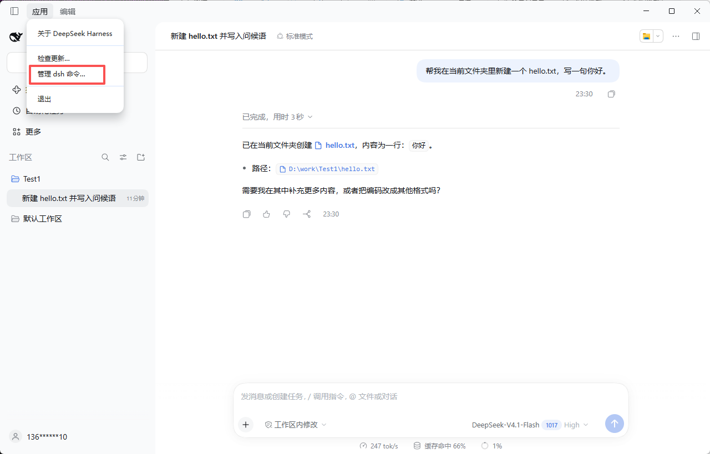
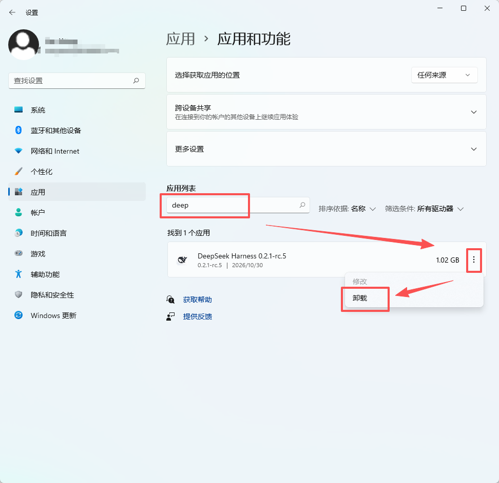
- 打开 DeepSeek Harness（还没开就先开一下），让窗口在前台。
- 看屏幕最上面那条菜单栏（Mac 的程序菜单永远在屏幕顶部，不在窗口里），点 DeepSeek Harness → 找 管理 dsh 命令…（一般在“检查更新…”下面）→ 点 移除。这一条删的就是 7.1 节装进去的
dsh命令。 - 按
⌘Q退出（或点右上角菜单栏图标 → 退出），确认 Dock 里图标下面那个小点没了。 - 打开「访达」→ 左侧点 应用程序 → 找到 DeepSeek Harness。
- 右键（或按住
Control点）→ 移到废纸篓，需要时输入开机密码。 - 右键 Dock 里的废纸篓 → 清倒废纸篓，然后再看一眼「应用程序」确认已经没了。
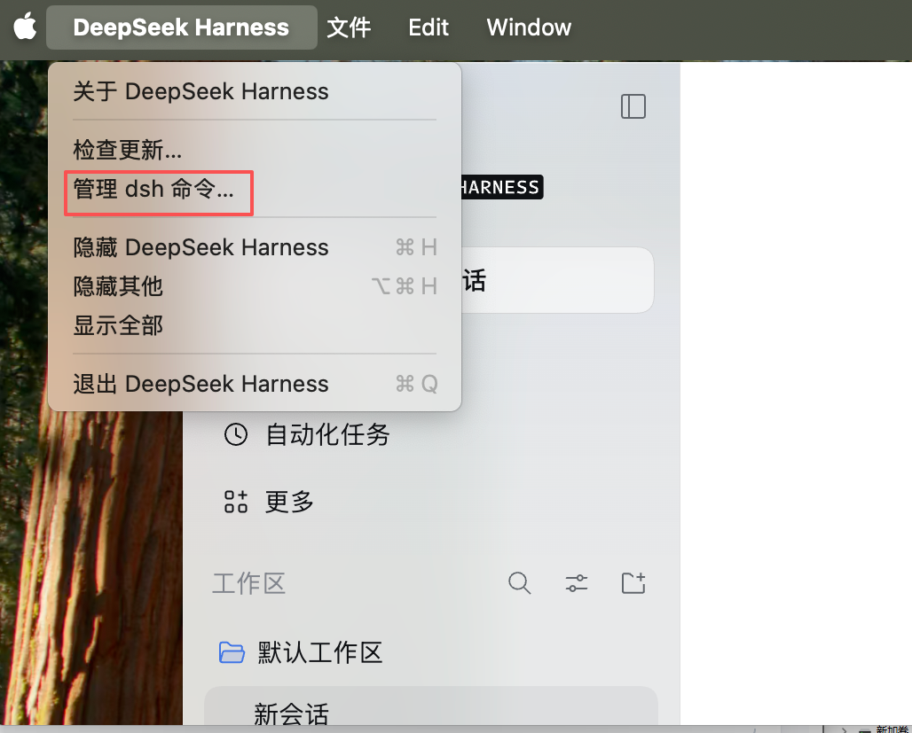
8.2 想彻底清干净（换账号或重装时用）
要删的只有一个文件夹 .dsh，里面是会话记录、设置和登录凭据。删了要重新登录、重新配置；你在工作区里生成的文件不受影响。
%USERPROFILE%\.dsh- 按
Win + R，输入%USERPROFILE%回车，打开个人文件夹。 - 点窗口上方 查看 → 显示 → 隐藏的项目。它是以点开头的，默认被藏起来。
- 找到
.dsh文件夹，右键 → 删除。
提示"文件正在使用"：Ctrl + Shift + Esc 开任务管理器 → 结束 DeepSeek 相关进程，再删。
~/.dsh- 打开「访达」，按
⇧⌘G（前往文件夹），输入~/.dsh回车。 - 想用鼠标找：先在访达里按
⌘ + ⇧ + .（句号）显示隐藏文件，再进个人文件夹（侧边栏那个小房子图标），就能看到.dsh。 - 把它拖进废纸篓 → 右键 Dock 里的废纸篓 → 清倒废纸篓。
⇧⌘G 跳进去后，窗口里显示的是 .dsh 里面的东西，这时选不到文件夹本身。按 ⌘ ↑ 退回上一级（⌥⌘↑ 新窗口打开上一级，⌥⌘P 打开路径栏直接点上级）；退到个人文件夹后 .dsh 是隐藏的，按 ⌘⇧. 让它显出来，点选后按 ⌘⌫ 移到废纸篓。
提示“正在使用”：按 ⌥⌘Esc 打开强制退出窗口 → 选中 DeepSeek 相关项 → 强制退出，再删。
⇧⌘G 分别打开 ~/Library/Application Support、~/Library/Caches、~/Library/Preferences，把名字里带 DeepSeek / dsh 的项删掉。只删对得上那几个，别把整个 Library 删了。
8.3 命令行版是另一套东西
（用不到可以跳过——没额外装过命令行版的话，这一段跟你无关，不影响卸载。）
先分清两个 dsh：桌面版装的那个就是 8.1 第 2 步「管理 dsh 命令…」管的，在应用里「移除」最干净；npm 装的命令行版是另一个包，卸载桌面版不会带走它。
如果电脑上还有命令行版（dsh 命令），卸载桌面版不会连带删掉它。在“命令提示符”或 PowerShell 里运行在「终端」里运行——装过哪个就卸哪个，两个都各跑一次（没装的那个会提示找不到，忽略即可）：
查它还在不在、装在哪：
which -a dshMac 上常见位置：/opt/homebrew/bin/dsh（Apple 芯片 + Homebrew）、/usr/local/bin/dsh（Intel 机器，或用官方 pkg 装的）、~/.npm-global/bin/dsh（自己设过 npm 全局目录）。如果打出来的是 /Applications/DeepSeek Harness.app/… 这种，那就是桌面版放进去的，回 8.1 第 2 步用「移除」，不要手动 rm。完全没输出（not found）就说明本来就干净，跳过。
要硬删就照抄 which dsh 打出来的完整路径（Homebrew 目录一般归你自己所有，不加 sudo 也能删；/usr/bin 里的别碰）：
sudo rm /opt/homebrew/bin/dsh删完重开一个终端窗口（或运行 hash -r），再 which dsh 确认已经 not found。
npm uninstall -g @deepseek-ai/dshnpm uninstall -g deepseek-harness-cli9常见问题
点一下问题就能展开答案。
双击安装包没反应 / 一闪而过
多半被安全软件拦了。右键安装包 → 以管理员身份运行。仍不行就临时关掉杀毒软件再装，装完马上开回来。
多半是系统拦的。去 系统设置 → 隐私与安全性 点「仍要打开」；或者在「应用程序」里按住 Control 点图标 → 「打开」。还不行就是芯片选错了包，重新下对应架构的。
显示"Windows 已保护你的电脑"
新软件的正常提示，不是中毒。点 更多信息 → 仍要运行。前提是安装包从官网下的。
安装到最后报错
常见原因是磁盘满或权限不足。清出 2 GB 空间，右键安装包用管理员身份运行再试。
提示"已损坏，无法打开，你应该将它移到废纸篓"
这是 macOS 对未经公证的下载包的限制，不是真的文件坏了。确认包是从官网下的之后，打开「终端」运行：xattr -dr com.apple.quarantine "/Applications/DeepSeek Harness.app"
再双击打开。（会把整个应用从“网上下载”的标记去掉，需要的话把路径换成你实际的位置。）
提示"无法打开，因为 Apple 无法验证"
正常，第一次都会拦。去 系统设置 → 隐私与安全性 → 往下滚找到“仍要打开”点一下，输密码或 Touch ID，之后就不会再问了。
系统设置里根本没有「仍要打开」这个按钮
得先被拦一次，这一行才会出现在 系统设置 → 隐私与安全性 下方。先到「访达 → 应用程序」双击一次，弹出拦截提示时点 好 / 完成，再回设置里看。或者直接用鼠标：在「应用程序」里按住 Control 点图标 → 打开 → 再点弹窗里的 打开。
提示"这台 Mac 不支持这个应用"
包下错了。Apple 芯片（M 系）用 arm64 / Apple Silicon 包，Intel 机器才是 x64。回看第 1 节怎么查芯片（苹果菜单 → 关于本机 → “芯片”），重下对应那个。
点「管理 dsh 命令」提示要先装到「应用程序」文件夹
dsh 命令的管理只对 /Applications 里那份生效。先 ⌘Q 退出 → 弹出 dmg → 只从「访达 → 应用程序」双击启动（别从 dmg 窗口或「下载」里点）。已经在应用程序里还报错的话，终端运行 xattr -dr com.apple.quarantine "/Applications/DeepSeek Harness.app" 后重启应用，再不行重启 Mac。
登录了还是提示余额不足（报 402 之类）
两种可能：① 没充值；② 登录的是聊天账号，不是开放平台账号。在客户端点左下角账号 → 设置 → 账号与余额 看「充值余额」，确实是 0 就点旁边的 充值（第 5 节）；也可以去 platform.deepseek.com 核对。
网页登录完没跳回客户端
浏览器拦了跳转。回浏览器完成页点 打开客户端；或者直接切回客户端窗口就行。Mac 上浏览器可能先弹一句“是否允许此网页打开 DeepSeek Harness”，点 允许。
找不到客户端窗口
被藏到托盘了。点右下角托盘（时间旁边的小箭头）里的 DeepSeek Harness 图标。
找不到客户端窗口
窗口关了但程序还在。点屏幕右上角菜单栏里的图标，或者点 Dock 里的图标（点 Dock 图标没反应就按住几秒看菜单）。
点卸载时说程序正在运行
只关了窗口，没真退出。右键托盘图标 → 退出；再到任务管理器确认没有 DeepSeek 进程。
删不掉应用 / 提示程序正在运行
先按 ⌘Q 真退出；还不行就按 ⌥⌘Esc 打开强制退出窗口，选中 DeepSeek 相关项 → 强制退出，再拖到废纸篓。
装完 dsh 命令，终端里还是找不到这个命令
PATH 没刷新。关掉命令行窗口，重新开一个再试；还不行就看「系统 → 系统信息 → 高级系统设置 → 环境变量」，用户变量 Path 里应该有客户端写进去的那个目录。最后招：在客户端里「移除 → 安装」重来一次。
终端窗口要在装完之后新开一个（旧的读不到新 PATH）。先用 which -a dsh 看它在不在、在哪：如果装在 ~/.local/bin 而那里没进 PATH，在 ~/.zshrc 末尾加一行 export PATH="$HOME/.local/bin:$PATH"，存盘后运行 source ~/.zshrc（或直接重开终端）。还不行就在客户端里「移除 → 安装」重来一次。
已经卸载了，命令行里的 dsh 还残留 / 报错
说明卸载时跳过了「管理 dsh 命令 → 移除」。在命令行运行 where dsh，它会列出残留路径（一般在 %LOCALAPPDATA%\Programs\ 下，或 npm 全局目录 npm root -g 里）。把那个 dsh.cmd / dsh.exe 删掉即可，别把整个文件夹都删了。如果提示"找不到命令"，说明本来就清干净了，不用管。
说明卸载时跳过了「管理 dsh 命令 → 移除」。在「终端」里运行 which -a dsh，它会列出所有残留路径：/opt/homebrew/bin/dsh（Apple 芯片 + Homebrew）、/usr/local/bin/dsh（Intel 机器或官方 pkg）、或 npm 全局目录 $(npm prefix -g)/bin/dsh。照抄那个路径用 rm 删掉（自己的目录不用 sudo，/usr/bin 里的别碰），别把整个 bin 目录删了。删完 hash -r 或重开终端，再 which dsh 确认 not found。
卡住不动 / 一直转圈
网络或服务端问题。退出客户端重开；还不行就重启电脑再试。
更新之后打不开了
预览版偶发问题。去官网重新下载最新安装包装一遍——会覆盖程序，你的数据还在。Mac 上把旧的应用拖到废纸篓，再把新包拖进「应用程序」就行；数据在 ~/.dsh，不会丢。
它会不会把我的文件删掉 / 传走？
它只能操作你给它指定的工作区文件夹，跑不出这个范围。新建、修改、跑命令这类动作通常先问你（有的设置下不弹，就直接做了），所以工作区选小一点就是最实在的保护：别一上来就把整个 C 盘交给它。别一上来就把整个个人文件夹交给它。看不懂的动作先点拒绝。重要文件先备份，是永远的保险。
10一页速查
| 我要做什么 | 去哪里 |
|---|---|
| 下载安装包 | www.deepseek.com/download/ |
| 看功能介绍 | www.deepseek.com/harness/ |
| 充值 | 客户端左下角账号 → 设置 → 账号与余额 → 「充值」；或 platform.deepseek.com |
| 注册 / 看余额 / 查用量 | 客户端「设置 → 账号与余额」，或 platform.deepseek.com |
| 看花了多少钱 | 客户端「设置 → 账号与余额」→「查询用量」，或 platform.deepseek.com/usage |
| 看单价 | 用量信息页左下角「产品定价」→ 模型 & 价格（空闲 / 高峰） |
| 找回被藏起来的窗口 | 点右下角托盘里的图标 |
| 找回被藏起来的窗口 | 点右上角菜单栏里的图标，或点 Dock 图标 |
| 彻底退出 | 右键托盘图标 → 退出 |
| 彻底退出 | ⌘Q，或菜单栏图标 → 退出 |
把 dsh 命令装进终端 | 客户端菜单 → 安装 dsh 命令…（7.1） |
| 卸载 | 先「管理 dsh 命令 → 移除」，再从「设置 → 应用」卸载 |
| 卸载 | 先「管理 dsh 命令 → 移除」，再把应用拖进废纸篓 |
| 数据在哪 | %USERPROFILE%\.dsh（隐藏文件夹，删前先看 8.2） |
| 数据在哪 | ~/.dsh（隐藏文件夹，⇧⌘G 直达，删前先看 8.2） |